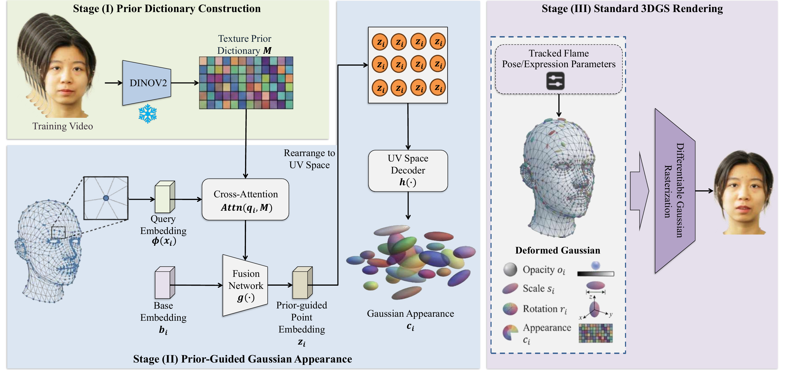

Demo Video
HiFiAvatar: Prior-Guided Gaussian Appearance Learning for High-Fidelity Animatable Head Avatars from Monocular Video
HiFiAvatar improves monocular animatable head avatar reconstruction by regularizing direct Gaussian RGB prediction with a frozen subject-specific identity and texture prior distilled from the input video.
Abstract
Learning animatable head avatars from a short monocular video is attractive for expression-driven and pose-driven rendering, yet recovering fine subject-specific appearance from such input remains difficult. Existing Gaussian head avatar methods are efficient and practical, but many still learn point-wise appearance with weak constraints under monocular ambiguity, often producing over-smoothed results. HiFiAvatar addresses this bottleneck with a frozen subject-specific visual prior. Pretrained visual features extracted from the training video are aggregated into a compact identity and texture dictionary. Each Gaussian primitive queries this dictionary from canonical space, fuses the retrieved cue with a learnable point embedding, and predicts color through a lightweight surface-space decoder before standard Gaussian rendering. Because the prior stays fixed during optimization, it narrows the appearance solution space and stabilizes high-frequency reconstruction while preserving the efficiency of Gaussian avatar rendering.
Pipeline
Prior-guided appearance learning in three stages
The method figure below summarizes prior construction, prior-guided Gaussian appearance prediction, and the unchanged standard 3D Gaussian rendering stage.

Prior dictionary construction
A frozen pretrained backbone extracts token-level visual features from the training video and aggregates them into a compact identity and texture dictionary.
Prior-guided Gaussian appearance
Canonical Gaussian anchors form learned queries, retrieve subject-specific appearance cues through cross-attention, and combine them with base embeddings in UV space.
Standard 3DGS rendering
The predicted RGB appearance is rendered by the standard Gaussian splatting rasterizer, so the improvement comes from better appearance estimation rather than a heavier renderer.
Results Gallery
Qualitative video results
The sequences below summarize self-reenactment, cross-reenactment, and multi-view consistency evidence corresponding to the qualitative evaluation in the paper.
Citation
BibTeX